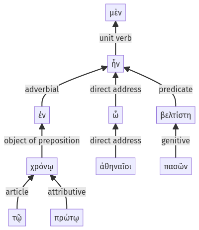

Lysias, Oration 1, 1.6.65-1.7.5a
1.6.47-1.6.64a | 1.7.6-1.7.16a
Sentence 12
1.6.65-1.7.5a
ἐν μὲν οὖν τῷ πρώτῳ χρόνῳ, ὦ ἀθηναῖοι, πασῶν ἦν βελτίστη:
1 ἐν τῷ πρώτῳ χρόνῳ ὦ ἀθηναῖοι πασῶν ἦν βελτίστη
ἐν μὲν οὖν τῷ πρώτῳ χρόνῳ, ὦ ἀθηναῖοι, πασῶν ἦν βελτίστη:
Highlighting:
- connecting words
- unit verb
- subject
- object
Color code:
- independent clause (level 1, linking verb)
